地政学
マナグアは中米地峡の内陸寄りにあり、太平洋岸、カリブ海側、コスタリカ、ホンジュラスを結ぶ政策判断を集めます。米国、地域統合、移住、運河構想、災害対応が首都の政治に入り、外交と生活が近く交差します。
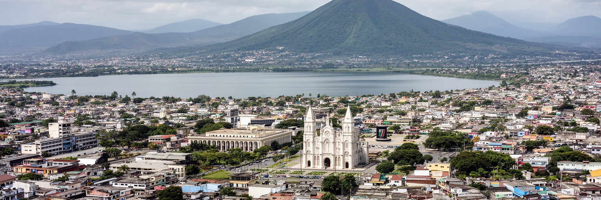
🇳🇮 ニカラグア共和国 / 首都 / World City Atlas
ショロトラン湖の南岸に国家行政、地震後に広がった低層都市、商業軸、バスターミナル、火山湖、宗教、移住の記憶、日々の家族生活が重なる中米の首都です。
都市の骨格
マナグアはショロトラン湖の南岸にあり、旧中心部、官庁、広い幹線道路、商業地区、郊外住宅が分散する都市です。地震、革命、移住、商業化が都市形を変え続けています。
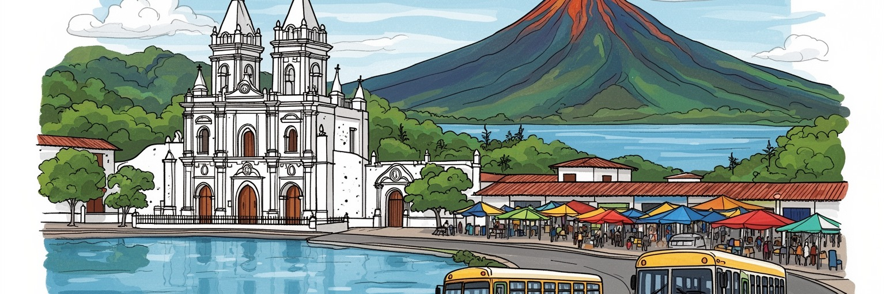
マナグアは中米地峡の内陸寄りにあり、太平洋岸、カリブ海側、コスタリカ、ホンジュラスを結ぶ政策判断を集めます。米国、地域統合、移住、運河構想、災害対応が首都の政治に入り、外交と生活が近く交差します。
行政、商業、金融、通信、建設、製造、観光、バス交通が雇用を作ります。市場の小商い、送金に支えられる消費、郊外のサービス業も大きく、若者は安定職、配達、修理、家族経営、学費と通学の間で仕事を探します。
カトリック、福音派、革命記憶、詩、音楽、野球、家族行事が日常を形づくります。市場では地方から来た食材と話し方が混ざり、ラジオやSNS、湖岸の広場、教会行事、夜の音楽、祭礼が都市の帰属と記憶を深く支えます。
旅人は革命広場、旧大聖堂、湖岸公園、ウエンベス市場、ティスカパ、マサヤ火山への動線を巡ります。住民には暑さ、交通、家賃、水、治安、海外移住の家族関係が現実です。湖岸の夜風と屋台の声も記憶に残ります。
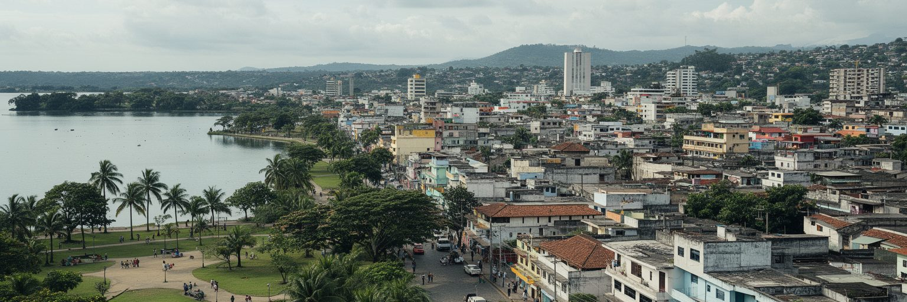
マナグアは海港の都市ではなく、ショロトラン湖の南岸に沿って広がる湖岸首都です。湖は都市名の由来を感じさせる水辺であり、旧中心部、革命広場、湖岸公園、低地の住宅、観光施設を近い距離に置きます。長く汚染が問題になった湖は、かつて都市の裏側のように扱われましたが、近年は遊歩道や公園整備によって、住民が夕方に歩く場所として再び意識されています。ただし、水辺の再生は見た目の整備だけでは足りません。排水、廃棄物、浄化、低地の安全、公共交通、日陰、夜間の治安がそろって初めて、湖岸は市民の共有財産になります。湖の向こうには火山性の地形が見え、街の内部にもクレーター湖や丘が点在します。水と火山の近さは、景観の魅力であると同時に、地震、噴火、浸水、地盤の弱さを忘れさせません。マナグアを読む時、湖岸の開放感と災害リスク、観光の明るさと環境修復の長い課題を同じ視野に入れる必要があります。水辺が首都の顔になるほど、誰がそこへ行けるのか、周辺の住民が追い出されないのかも問われます。湖は写真の背景ではなく、都市の記憶、衛生、休息、気候、交通計画を結ぶ軸です。水際の整備が学校帰りの散歩や週末の家族時間を増やすなら、都市再生は観光政策を超えて生活の質に届きます。湖岸の夜風、屋台の油の匂い、遊具の音が日常の信頼を映します。
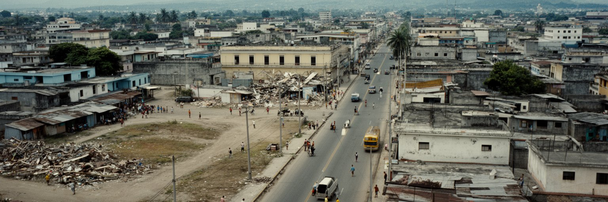
マナグアの都市形を決定的に変えた出来事は、二十世紀の大地震です。特に一九七二年の地震は旧中心部を深く破壊し、多くの公共建築、商店、住宅、記憶の場所を失わせました。その後の復興は一つの密な中心を再建するよりも、官庁、商業、住宅、ホテル、病院、学校が幹線道路沿いへ分散する形で進みました。歩いて回れる歴史的都心が弱く、車やバスで点を結ぶ都市になった背景には、この災害の記憶があります。空き地、記念碑、旧大聖堂の傷んだ姿、広い道路、低層の建物は、災害後の都市計画と政治の選択を今も示します。地震は単なる過去の悲劇ではありません。建築基準、避難場所、公共施設の配置、低所得住宅の安全、学校の耐震性、火山性地形への理解として、日常に残すべき制度です。中心が壊れた都市では、人の流れも変わります。市場、モール、バスターミナル、郊外住宅が新しい重心となり、旧中心部は国家儀礼と観光の場所として再解釈されました。マナグアを見る時、整然とした旧市街がないことを欠点だけで捉えると、都市の本質を見逃します。ここでは、災害が作った空白をどう記憶し、どう公共空間へ戻すかが、首都の成熟を測る基準になります。空白地を駐車場や記念碑だけで終わらせず、木陰、住宅、文化施設、歩行空間へ変えられるかも大切です。復興型の都市設計は現在進行形です。
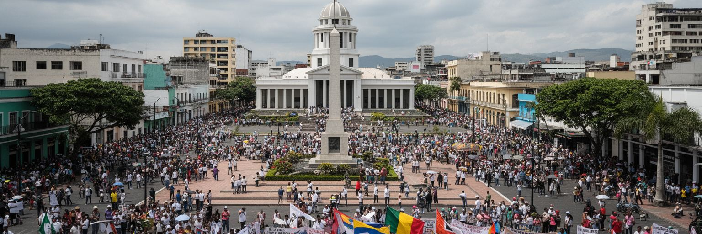
マナグアはニカラグアの大統領府、国会、省庁、裁判所、外交団、報道機関、政党が集まる政治首都です。革命広場、カルロス・フォンセカやサンディーノの記憶、公共の記念碑は、二十世紀後半の革命、内戦、冷戦、社会改革、対米関係を都市空間に刻んでいます。政治は記念日や集会だけでなく、燃料価格、食料、送金、警察、教育、医療、土地、地方開発、移住の判断として暮らしに届きます。首都に国家機能が集中するほど、地方の農村やカリブ海側の自治地域からは距離も生まれます。行政手続き、病院、大学、裁判、金融、国際機関を求めて多くの人がマナグアへ来るため、首都は制度への入口であると同時に、制度への不満が見える場所になります。ニカラグア政治は国際的にも注視され、制裁、外交、移住政策、援助、地域安全保障が首都の議論に影響します。都市を歩くと、政治的なシンボルと日常の商いが近くに並び、国家の物語と家族の生活が切り離せないことが分かります。マナグアの政治を理解するには、誰が広場で発言できるのか、誰が官庁へアクセスできるのか、公共サービスがどこまで公平に届くのかを見る必要があります。制度の近さは便利さであり、同時に緊張でもあります。首都の広場で起きる沈黙や祝祭、警備、行列、家族連れの散歩は、政治が日常空間をどう包むかを示します。その読み取りが欠かせません。
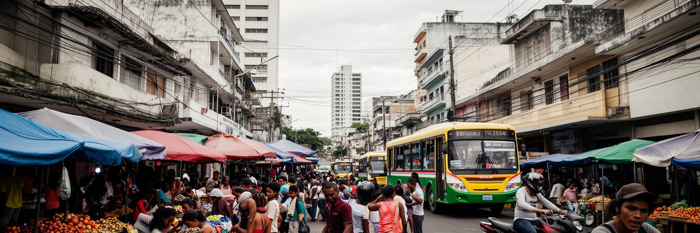
マナグア経済は、官庁の給与だけでなく、商業、金融、通信、建設、製造、物流、教育、医療、観光、小売、飲食によって動いています。ウエンベス市場やオリエンタル市場のような大きな市場では、地方から来る農産物、衣料、日用品、携帯電話、修理、食堂、交通が複雑に絡み、都市の家計を支えます。モールやオフィスの成長は中間層の消費を示しますが、露店、家族商売、日雇い、バス関連の仕事も依然として重要です。海外に移住した家族からの送金は、住宅改修、教育費、医療、店の仕入れ、日々の消費を下支えします。そのため、米国やコスタリカの景気、移民政策、為替は、マナグアの市場価格や家族の計画にも影響します。若者にとっては、大学を出て銀行や通信会社に入る道もあれば、配達、販売、修理、観光、家族事業で経験を積む道もあります。雇用の質は、技能、交通、治安、ジェンダー、家庭の資本によって大きく分かれます。ラジオ広告やSNSの告知は、小さな店や屋台が客をつかむ手段にもなっています。都市の商業を整える政策は、道路や駐車場だけでなく、歩道、衛生、保管場所、女性商人の安全、小規模事業の信用、職業訓練を含む必要があります。マナグアの労働を読むとは、数字上の成長と、市場で一日を始める人の身体感覚を同じ経済として見ることです。商いの場所を整えながら排除しない都市管理が、雇用と秩序を両立させます。
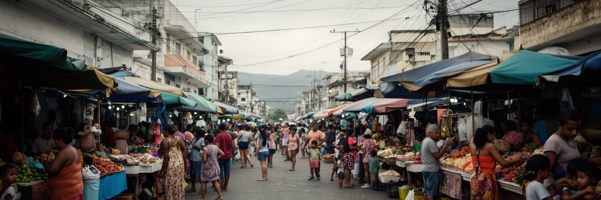
マナグアの市場は、食文化と地方社会を一度に見せる場所です。ニカラグア各地から豆、米、チーズ、肉、バナナ、トウモロコシ、果物、唐辛子、コーヒーが入り、家庭の食卓や小さな食堂へ流れていきます。ガジョピント、ナカタマル、ビゴロン、ケシージョ、肉料理、甘い飲み物は、観光向けの名物である前に、通勤前、昼休み、週末の家族行事を支える日常食です。市場のにぎわいは、女性商人、荷運び、調理人、バスの運転手、地方から来た仕入れ客、学生の小遣いに支えられています。食は文化であると同時に、物価、農業、燃料、気候、送金の影響を受ける生活の指標でもあります。干ばつや輸送費の上昇は、豆や米の値段を通じてすぐ家計に届きます。市場は混雑、火災、衛生、治安、道路占用などの問題を抱えますが、単純に整理して郊外へ追い出せば、都市の生活網は弱くなります。必要なのは、商いの場所を認めたうえで、排水、廃棄物、通路、保管、消防、公共交通を改善することです。旅人が市場を歩く時、食べ物の味だけでなく、地方と首都を結ぶ人の移動、家族経営の強さ、女性の労働、価格交渉の声を感じられます。マナグアの食文化は、湖岸の景色よりも身近なところで、国の暮らしを伝えています。朝の湯気、昼の混雑、夕方の片付けは、統計では見えにくい都市の時間割でもあります。
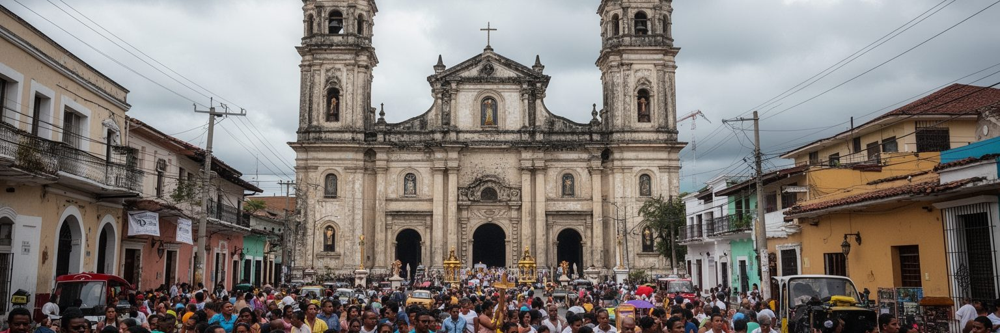
マナグアでは、宗教が家庭、学校、政治、祝祭、近隣関係に深く入り込んでいます。カトリックの大聖堂や各地区の教会、福音派の礼拝所、宗教行列、聖母への祈り、葬儀、結婚式、洗礼は、住民の時間を整える重要な場です。旧大聖堂の傷んだ姿は地震の記憶を語り、新しい大聖堂は現代の首都の宗教的な中心を示します。宗教施設は信仰の場所であるだけでなく、相談、教育、慈善、家族のつながり、災害時の支援にも関わります。政治的な緊張が強い時期には、宗教者の発言や教会の立場が公共の議論に影響することもあります。一方で、都市の信仰生活は一枚岩ではありません。世代、階層、政治的立場、地方出身者の経験によって、教会との距離や宗教の意味は変わります。若者はSNSや国際的な音楽文化に触れながらも、家族行事や地域の祝祭で信仰の言葉に戻ることがあります。宗教を観光対象として見るだけでは、住民が祈りを通じて不安、病気、移住、家計、教育、死別を受け止めている現実は見えません。マナグアの公共生活を読むには、広場や官庁と同じくらい、礼拝後の会話、教会前の露店、家族が集まる食卓を見つめる必要があります。信仰は都市を静かに結ぶ社会的な糸でもあります。祝祭の日には、音楽、花、食事、交通規制、祈りが一つになり、宗教が街路を公共の舞台へ変えていきます。
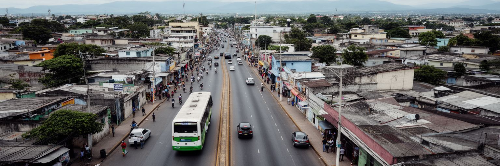
マナグアは、地震後に中心が分散し、広い幹線道路と郊外住宅に沿って生活圏が伸びた都市です。官庁、大学、病院、モール、市場、バスターミナル、住宅地が離れているため、日々の移動は都市生活の負担にも機会にもなります。バスやミニバスは多くの住民にとって欠かせない交通で、通学、通勤、買い物、病院、地方都市への移動を支えます。一方で、待ち時間、混雑、乗り継ぎ、暑さ、歩道の不足、夜間の安全、雨季の冠水は、車を持たない人ほど重く受け止めます。自家用車を使える世帯は郊外の住宅や商業施設を選びやすく、使えない世帯は公共交通と徒歩環境に強く依存します。都市の公平性は、道路の幅だけではなく、バス停の日陰、歩道の連続性、横断の安全、障害のある人の移動、女性の夜間移動でも測られます。郊外化は土地と住宅の選択肢を広げますが、上下水道、学校、診療所、排水、廃棄物収集が追いつかなければ、生活費と時間を増やします。市域を越える通勤も多く、都市圏全体で交通と土地利用を調整する必要があります。マナグアを歩くと、都市が点でできていることがよく分かります。その点を誰でも移動できる線で結べるかが、首都の暮らしやすさを左右します。交通改善は車の流れだけでなく、炎天下で待つ人の体力、子どもの通学、高齢者の通院を基準に考える必要があります。
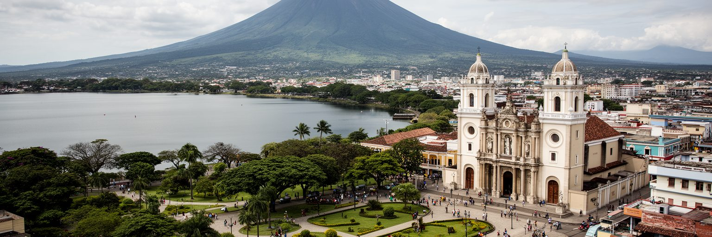
マナグア観光は、植民地都市の石畳を長く歩く旅とは少し違います。旧大聖堂、革命広場、国立宮殿、湖岸公園、プエルト・サルバドール・アジェンデ、ティスカパの丘、ウエンベス市場、新大聖堂、近郊のマサヤ火山やグラナダへの動線を組み合わせ、地震後の首都と火山国の自然を短い距離で読む旅になります。市内にはクレーター湖や丘があり、都市のすぐ近くで火山性地形を感じられます。湖岸の夕方は家族連れや若者が集まり、屋台、遊具、音楽、写真撮影が日常の観光を作ります。ただし、見どころが分散しているため、徒歩だけで回るには工夫が必要です。案内、公共交通、タクシー、暑さ対策、安全情報が旅の質を左右します。マナグアは、レオンやグラナダへの通過点として扱われることも多いですが、首都に滞在すると、ニカラグアの政治、移住、商業、災害記憶、家族の暮らしが見えてきます。観光が地域に利益を残すには、大きな施設だけでなく、市場の食堂、小さなガイド、文化施設、修復された建物、歩きやすい湖岸をつなぐことが大切です。旅人が旧大聖堂の静けさと市場の熱気を同じ日に体験すると、マナグアが失われた中心を抱えながら、新しい公共空間を作ろうとしている都市だと分かります。短い滞在でも、湖岸の夜風と火山の気配を結びつけると、この首都の地形的な個性が鮮明になります。
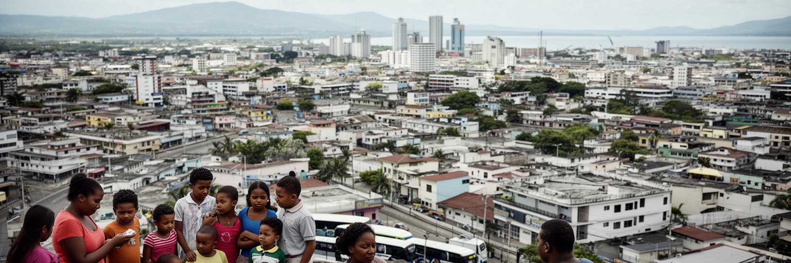
マナグアの日常には、国内移住と海外移住が深く入り込んでいます。地方から首都へ来る学生、労働者、商人は、教育、病院、行政手続き、仕事を求めて都市に集まります。同時に、多くの家族は米国、コスタリカ、スペインなどへ出た親族とつながり、送金、電話、SNS、帰省、荷物、将来の移動計画を通じて生活を組み立てます。送金は家計を助け、家の増築、学費、医療、店の開業、借金返済に使われますが、家族が離れて暮らす孤独や子どもの養育、介護の負担も生みます。都市の商業が送金による消費で支えられる一方、若い世代が国内で十分な機会を感じられなければ、移住は選択肢ではなく必要になります。空港、バスターミナル、送金窓口、通信会社、旅行代理店は、家族の移動と感情を扱う都市インフラでもあります。政治的緊張や経済不安が強まると、移住の判断はさらに切実になります。マナグアは人を集める首都であり、人を外へ送り出す首都でもあります。移住を単に人口流出として見るのではなく、教育、雇用、公共サービス、家族関係、女性の負担、若者の希望を結ぶ現象として読む必要があります。海外との線が強い都市では、遠くの法律や景気が近所の食卓に届きます。その距離の近さが、マナグアの家族生活を現代的で複雑なものにしています。帰省の時期には街の消費も感情も動き、離れて暮らす家族が一時的に同じ食卓へ戻ります。
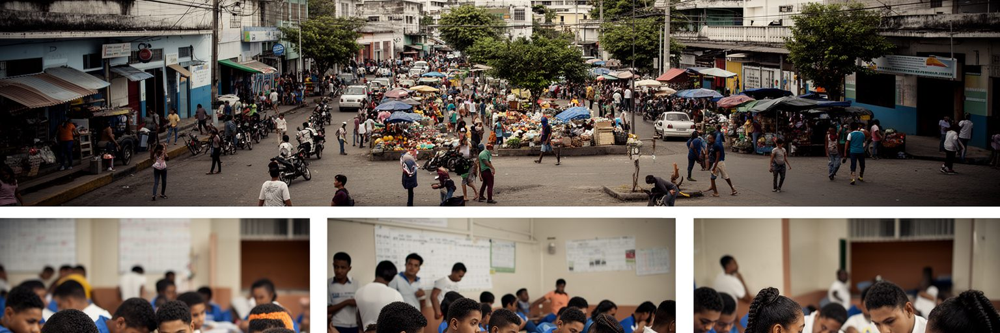
マナグアの将来は、若い世代が学び、働き、街に居場所を持てるかに大きく左右されます。首都には大学、専門学校、病院、金融、通信、商業、行政、文化施設が集まり、地方より多くの機会があります。しかし、授業料、交通費、家賃、家庭の収入、治安、政治的な緊張、ジェンダー、障害、地方出身者への見方は、若者の進路を分けます。安定した職に就ける人もいれば、家族商売、露店、配達、修理、日雇い、海外移住の準備で収入をつなぐ人もいます。スマートフォンやオンライン学習は新しい入口になりますが、通信費や英語力、パソコンへのアクセスが差を広げることもあります。若者に必要なのは、短い研修だけでなく、実際の雇用に結びつく技能、相談できる学校、使える図書館やスポーツ施設、安全な夜の交通、女性が安心して学べる環境です。文化面では、音楽、野球、教会の青年会、大学の議論、小さな起業、SNSの発信が、都市を自分たちのものにする力になります。子どもの通学路や高齢者の通院も、同じ公共空間の質に左右されます。マナグアが成熟するには、普通の若者が移住しなくても将来を描ける仕事と公共空間を増やすことが重要です。その手応えが生まれる時、分散した都市の点は、次の世代の生活圏として結び直されます。若者の選択肢を増やすことは、家族の移住判断や地域の安全にも直接つながります。
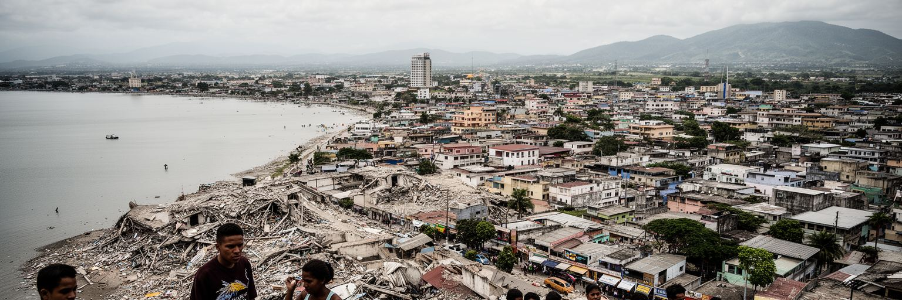
マナグアを読む面白さは、整った歴史都心ではなく、失われた中心と広がった生活圏の中にあります。ショロトラン湖は首都の顔であり、旧大聖堂と革命広場は地震と政治の記憶を残し、市場と幹線道路は日々の商業を動かし、火山湖と丘は自然災害の近さを示します。行政都市、商業都市、移住の拠点、家族の都市、観光の通過点という複数の顔が、低層で分散した街の中に重なっています。大都市としての圧倒的な密度はなくても、国家の判断、地方からの移動、海外送金、中米地峡の政治、災害復興、宗教生活が一つの首都に集まるため、読み応えは深いです。課題も明確です。公共交通の質、歩行環境、水辺の環境修復、旧中心部の再生、住宅、若者の雇用、政治的な開かれ方が、都市の将来を左右します。マナグアを短く訪れるだけなら、湖岸と火山の景色が印象に残ります。しかし時間をかけると、家族が送金を待つ日、学生がバスを乗り継ぐ朝、市場で値段を交渉する声、旧大聖堂の壁に残る地震の記憶が見えてきます。この首都は、災害で壊れた中心をそのまま抱えながら、郊外、商業、水辺、家族のネットワークで新しい都市像を作っています。空白を欠落ではなく記憶と可能性として読むことが、マナグア理解の入口です。都市の弱さを見つめるほど、湖岸、学校、市場、バス停を少しずつ良くする具体的な方向も見えてきます。